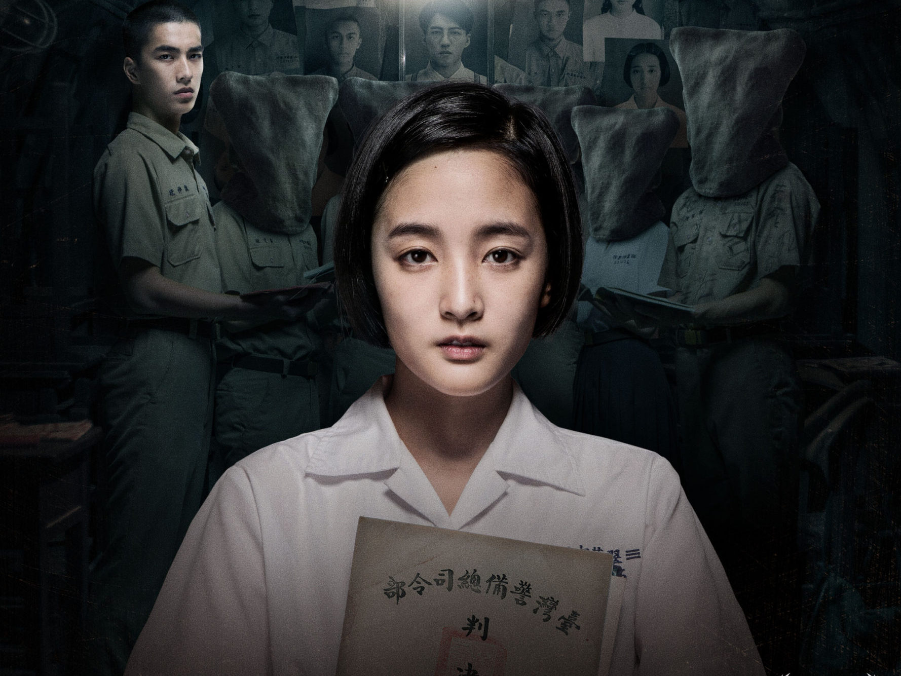
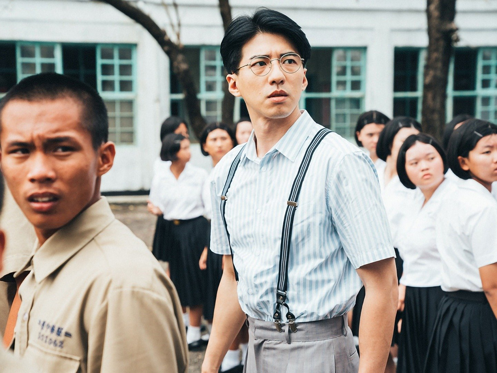
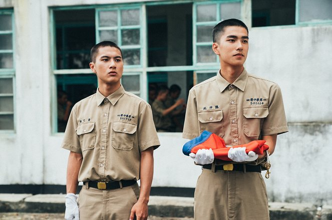
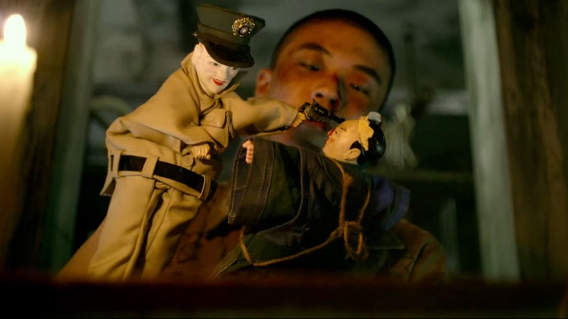

...aneb minulosti nikdo neuteče
Detention je tchajwanský horor z roku 2019 natočený na motivy stejnojmenné videohry z roku 2017. Celý příběh se odehrává roku 1962 na fiktivní střední škole během tchajwanského období Bílého teroru. Vše začíná když jsou dva studenti, druhák Wej Čung-ting a třeťačka Fang Ruej-sin, uvězněni ve škole přes noc. Wej je členem tajného školního klubu, v němž se čte zakázaná literatura zatímco Fang je dcerou váženého policisty. Zabránit jakémukoliv podezřelému chování či myšlení studentů má na starosti inspektor Bai, válečný veterán z doby čínské občanské války.
V noci se však ze školy stává peklo a všechna špína vypluje na povrch. Wej s Fang narazí i na jejich zhmotněné obavy. Zároveň se pomalu odkrývá záhada zmizení pana učitele Minga, zakladatele čtenářského klubu a další. Nebezpečí číhá na každém kroku a tudíž vyvstává otázka, zda skutečně můžeme věřit komukoliv – dokonce i sami sobě.
Detention začínal coby videohra tchajwanské společnosti Red Candle Games. V obou případech se jedná o velmi zdařilé dílo, které věrně zachycuje období Bílého teroru, v němž Kuomintang prováděl čistky nejen mezi svými straníky, ale i mezi obyčejným lidem. Obviněn byl každý, kdo byl podezřelý z komunistického sympatizování. Co mám však na Detention nejraději je to, že se jedná o zatím nejvěrnější zpracování tchajwanské kultury a tchajwanských zvyků. Tudíž film doporučuji alespoň z tohoto hlediska. Jedná se o psychologický horor, v nichž se zhmotňuje strach z udání a neustálé nejistoty do formy tradičních duchů čínské kultury. Tchajwanská herečka Wang Ťing za mě podala nejlepší výkon, jelikož dokázala ztvárnit postavu na oko křehoučké, ale mazané studentky Fang Ruej-sin, neboli častý asijský stereotyp tzv. „Dragon Lady“. Na závěr řečeno, dávám filmu hodnocení 8/10.
 